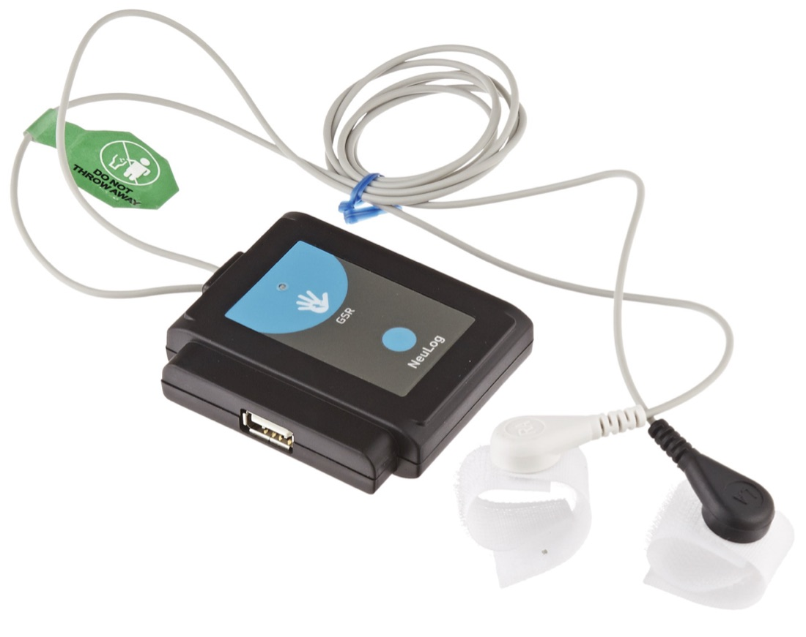
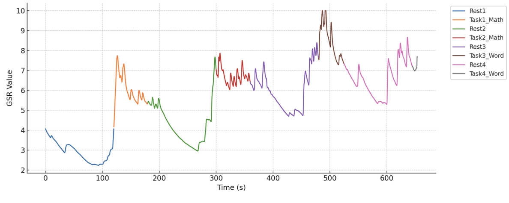
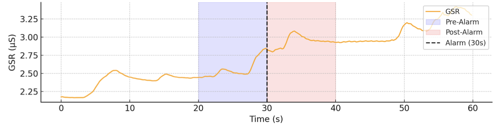
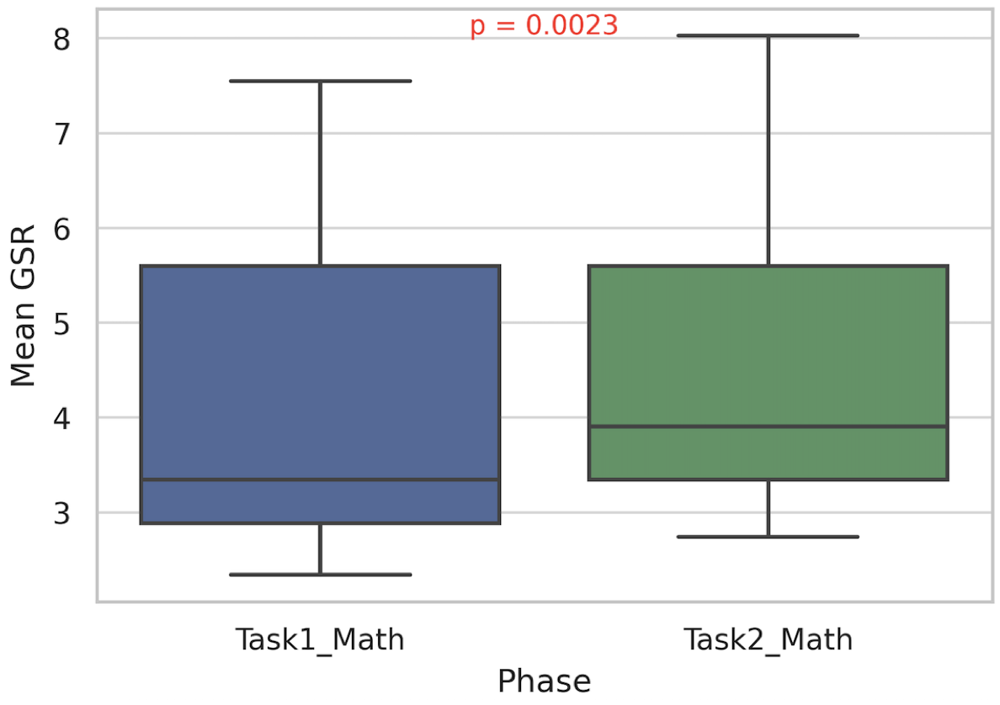
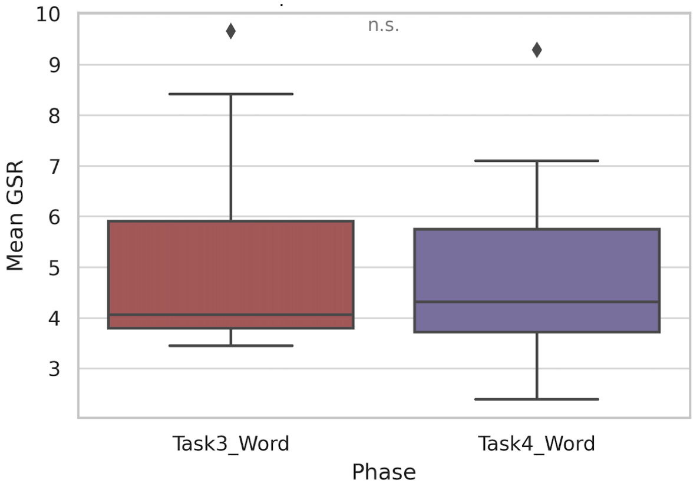
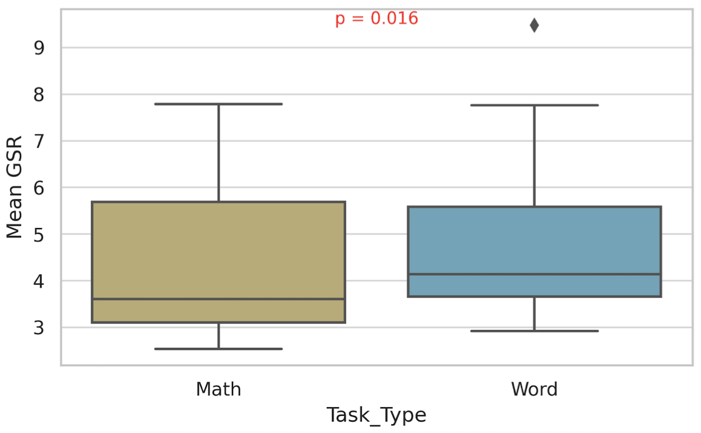
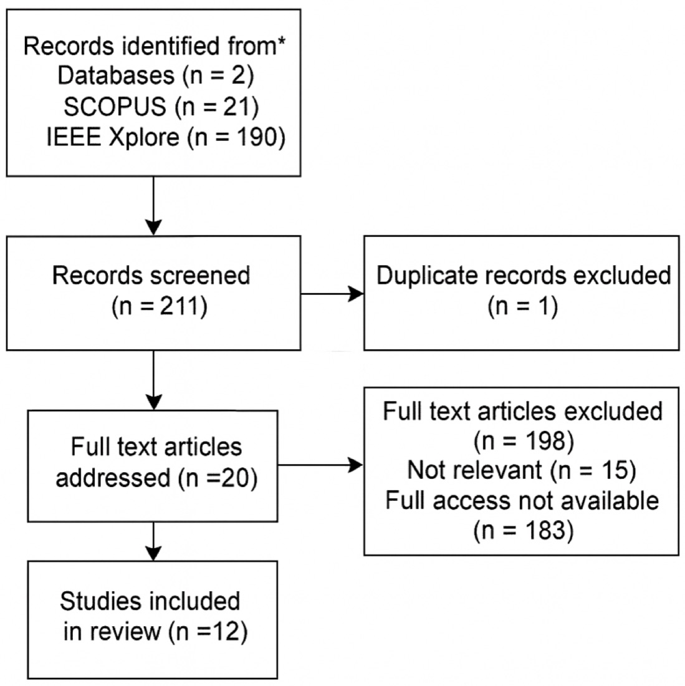

We measured people's skin conductance (a sweat-based signal of stress) while they did math and memory tasks, sometimes with a sudden alarm or clap mid-task. Thinking hard raised stress clearly, a surprise alarm raised it even more, and a simple machine learning model could tell "stressed" from "relaxed" with 91% accuracy using that signal alone.
The question
When you concentrate, your body reacts: your sympathetic nervous system kicks in and your skin conducts electricity slightly better as sweat glands activate. That signal is called Galvanic Skin Response (GSR), and it's one of the most sensitive real-time measures of mental effort and stress.
Plenty of studies have used GSR to measure cognitive load in calm lab settings. But real life isn't calm. We reviewed the literature and found that none of the studies tested what happens when a sudden, loud distraction hits in the middle of a task. That's the gap this paper fills.
How the study worked
Eleven participants wore a finger-mounted GSR sensor and went through a 10-minute session that alternated between rest and timed tasks. In one version of each task, we introduced a sudden auditory distraction. Which attempt got the distraction was randomized per participant.
- 2 minRest
- 1 minMath
- 2 minRest
- 1 minMathAlarm at 30s
- 2 minRest
- 45 sWord recall
- 2 minRest
- 45 sWord recallClaps at 20s & 40s
Rest / baseline Task Task with distraction

From raw signal to results
- Smooth the raw signal with a moving-average filter to remove noise.
- Segment it into labeled phases (each rest and each task).
- Extract features per phase: mean, peak, standard deviation, and area under the curve.
- Decompose the signal into a slow baseline (tonic) and fast reactions (phasic) using the neurokit2 library.
- Lock onto events: measure the size, rise time, and recovery of the spike after each distraction.
- Classify each phase as stress or rest with logistic regression.
What we found
1. Thinking hard raises stress, and it builds up
GSR jumped at the start of every task, especially the math tasks. Even during rest, the baseline crept higher as the session went on, a sign that the body wasn't fully recovering between tasks.


2. A sudden alarm makes it worse
Comparing the two math tasks, mean GSR was significantly higher when an alarm went off mid-task (t = −4.06, p = 0.0023). The reaction was fast: GSR spiked within 1–3 seconds of the sound.

3. Math is more stressful than memory recall
Math tasks produced significantly higher GSR than word-recall tasks (t = −2.90, p = 0.016). Interestingly, the claps during word recall didn't produce a significant difference (p = 0.196), suggesting memory tasks may be more resilient to brief interruptions.



4. A simple model can detect stress
Using just five basic GSR features per phase, a logistic regression model classified stress vs. relaxation with 91.3% accuracy. It misclassified only 2 of 23 phases, which shows lightweight models are enough for real-time stress monitoring.
| Metric | Relax | Stress | Average |
|---|---|---|---|
| Precision | 91.7% | 90.9% | – |
| Recall | 91.7% | 90.9% | – |
| F1 score | 91.7% | 90.9% | 91.3% |
| Accuracy | – | – | 91.3% |
| Actual | Relax | Stress |
|---|---|---|
| Relax | 11 | 1 |
| Stress | 1 | 10 |
Why it matters
- Adaptive software that eases off when a user is overloaded.
- Education tools that notice when a student is overwhelmed and adjust the pace.
- Safety-critical training (aviation, surgery, emergency response) that flags operators under excessive strain.
- Stress-management therapy for people with anxiety or attention disorders.
Limitations & next steps
With 11 participants the sample is small, and some recordings were incomplete in later phases, which limited the clap analysis. Math tasks always came before memory tasks, which may have introduced order effects. Next steps include larger and more diverse samples, automatic artifact correction, counterbalanced task order, and combining GSR with other signals like heart rate and pupil size.
How we reviewed the existing research
Following PRISMA guidelines, we searched SCOPUS and IEEE Xplore for studies using GSR to measure cognitive load. From 211 records, 12 studies met our criteria. They grouped into four themes: mental state, physiological data, task design, and detection accuracy. None introduced distractions during the tasks.
